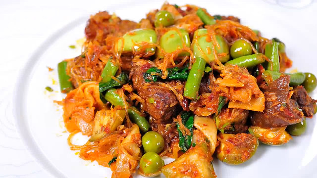
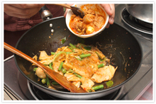

วิธีการทำ
1. โขลกเครื่องแกงรวมกันให้ละเอียด แช่วุ้นเส้นให้พอนุ่ม ตัดเป็นท่อน
2. ผัดเครื่องแกงกับน้ำมัน จนมีกลิ่นหอม ใส่ไก่ลงผัดให้เข้ากัน ใส่ผักสุกยาก ตามด้วยหน่อไม้ แล้วผัดให้เข้ากัน
3. เติมน้ำเล็กน้อย ใส่วุ้นเส้น ผัดให้เข้ากัน
4. ใส่ผงฮังเล ตามด้วยแกงฮังเล ผัดให้เข้ากัน
5. ใส่กะทิ แล้วตามด้วยผักสุกง่าย ผัดต่อจนสุก ยกลง


